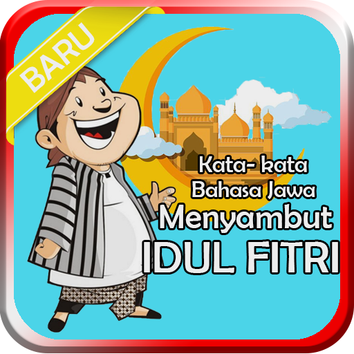

Ucapan Idul Fitri
Ucapan Idul Fitri Bahasa Jawa - 01
Ucapan Idul Fitri Bahasa Jawa - 02
Ucapan Idul Fitri Bahasa Jawa - 03
Ucapan Idul Fitri Bahasa Jawa - 04
Ucapan Idul Fitri Bahasa Jawa - 05
Ucapan Idul Fitri Bahasa Jawa - 06
Ucapan Idul Fitri Bahasa Jawa - 07
Ucapan Idul Fitri Bahasa Jawa - 08
Ucapan Idul Fitri Bahasa Jawa - 09
Ucapan Idul Fitri Bahasa Jawa - 10
Ucapan Idul Fitri Bahasa Jawa - 11
Ucapan Idul Fitri Bahasa Jawa - 12
Ucapan Idul Fitri Bahasa Jawa - 13
Ucapan Idul Fitri Bahasa Jawa - 14
Ucapan Idul Fitri Bahasa Jawa - 15
Ucapan Idul Fitri Bahasa Jawa - 16
Ucapan Idul Fitri Bahasa Jawa - 17
Ucapan Idul Fitri Bahasa Jawa - 18
Ucapan Idul Fitri Bahasa Jawa - 19
Ucapan Idul Fitri Bahasa Jawa - 20
Ucapan Idul Fitri Bahasa Jawa - 21